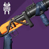

Vow of the Disciple
Equipment recommendations. They are not absolute and only serve a purpose of giving you a general guess about what you might want in every encounter.
1. Acquisition
UNSTOPPABLE CHAMPIONS
Close and medium combat distances
Small and medium enemies
Don't forget to adjust your gear to include anti-unstoppable tools. Depending on available anti-champ mods, you might want to go for other weapon types
Primary: SMGs / Auto rifles
Primary weapons to destroy scorn minions with



Special: Grenade Launchers / Fusions / Shotguns
Wave-frame or disorienting GLs are the best option to help with add clear
Heavy: Rockets / Linear Fusion Rifles
Use those to get rid of taken knights, glyphkeepers and champions quickly. Rockets with tracking are preferred
2. Collection
Close and medium combat distances
Small enemies
Primary: SMGs / Auto rifles
Primary weapons to destroy scorn minions with
Special: Grenade Launchers / Fusions / Shotguns
Wave-frame or disorienting GLs are the best option to help with add clear
Heavy: Rocket Launchers
For Boss DPS
3. Exhibition
OVERLOAD CHAMPIONS
Close combat distances
Small and medium enemies
Don't forget to adjust your gear to include anti-overload tools. Depending on available anti-champ mods, you might want to go for other weapon types
Primary: SMGs / Auto rifles
Primary weapons to destroy scorn minions with
Special: Grenade Launchers / Fusions / Shotguns
Wave-frame or disorienting GLs are the best option to help with add clear
Heavy: Machineguns / Rockets / Swords
More help with add clear and glyphkeepers. Don't kill yourself with a rocket
4. Dominion
Close and medium combat distances
Small and medium enemies
Primary: SMGs / Auto rifles
Primary weapons to destroy scorn minions with
Special: Fusion rifles / GLs / Snipers
Use your special to deal with adds or help with DPS when you're out of heavy
Heavy: Rocket Launchers
For Boss DPS